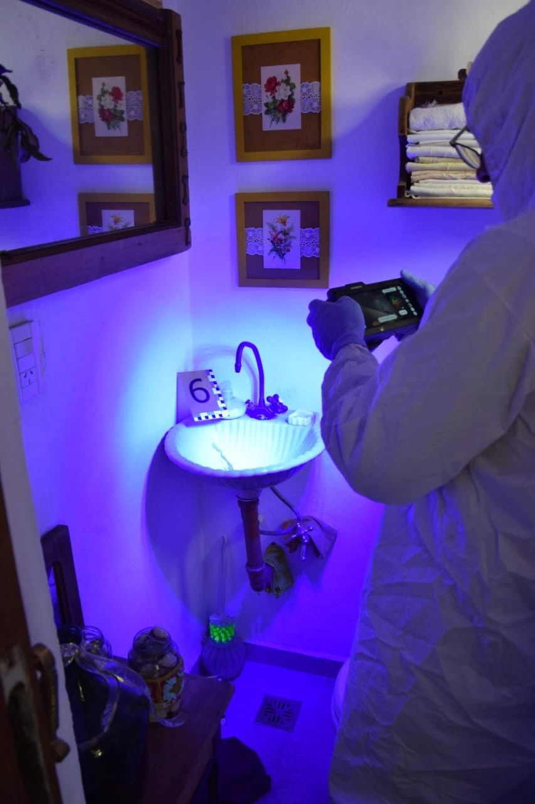
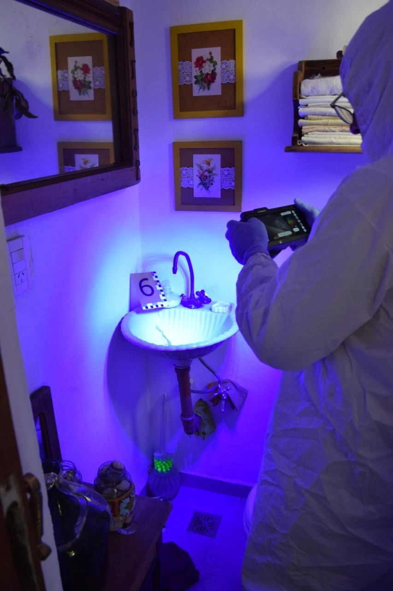

Let's promote learning
A place to learn, share and make visible the work of forensic professionals.

A place to learn, share and make visible the work of forensic professionals.
Services we offer
 

.JPG)

.JPG)

If criminalistics is your passion, this is your place. At CRIMINALÍSTICAOK, we are dedicated to sharing valuable content for forensic professionals and students. You will find updated information, key definitions, events such as congresses and trainings, and also motivational content to inspire you on your way.
Forensic science is constantly evolving, and our goal is to provide you with the tools and knowledge you need to keep growing. Join our community and keep up to date with the fascinating world of forensic science.
What do other crime professionals think about our work?
“As a trial lawyer, I deeply value the quality of the contents shared. They are tools that bring clarity and rigor to the analysis of expert evidence - highly recommended!”

“A serious, ethical and committed to continuous training project. The trainings exceed expectations and the didactic material is top notch.”
“The online trainings offered by this team are clear, updated and extremely useful for the professional practice. The seriousness and dedication with which they work is noticeable.”
We are here to answer your questions and discuss how we can help you.
infocriminalisticaok@gmail.com